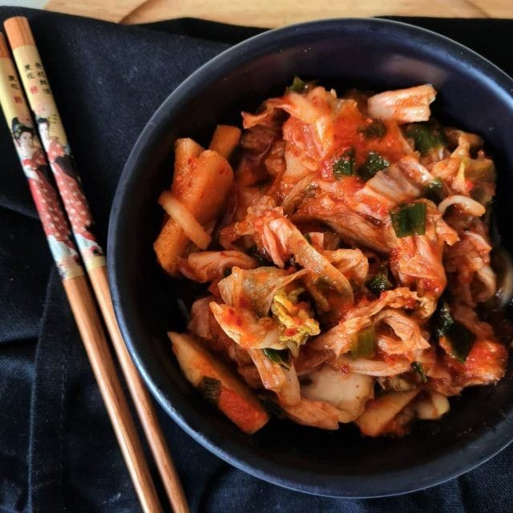
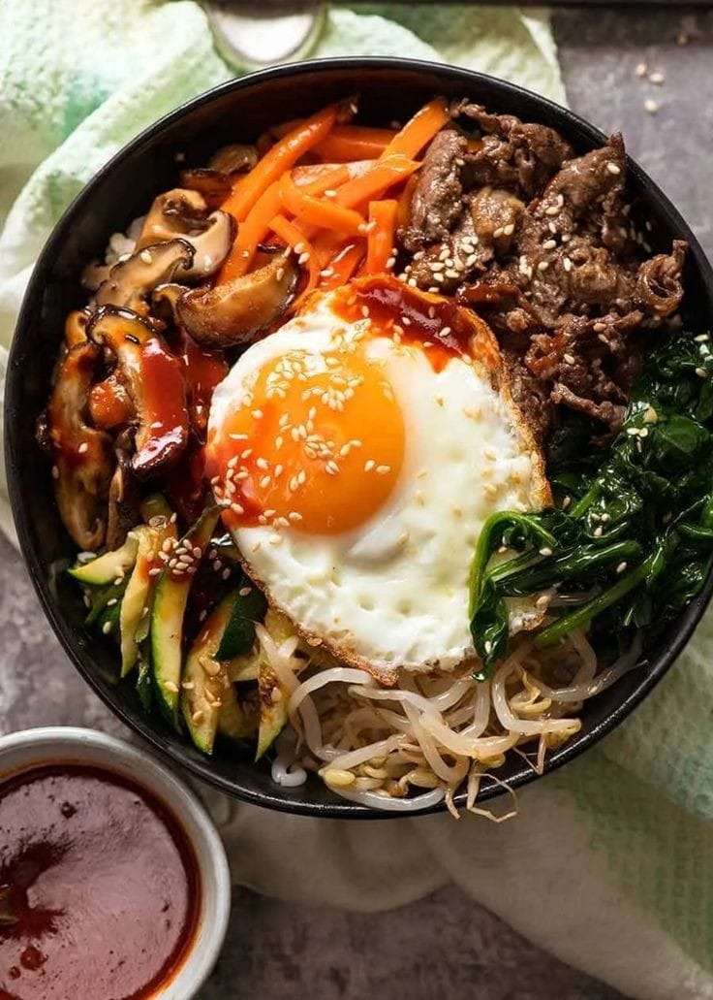
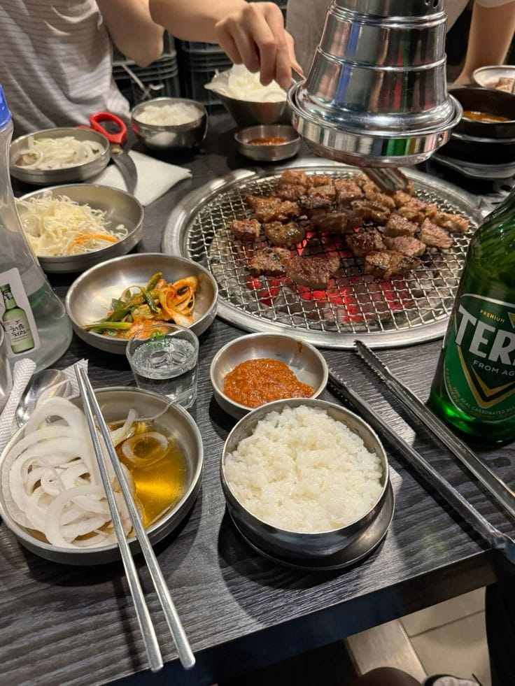

Kimchi é um dos pratos mais emblemáticos da Coreia do Sul. Feito com repolho fermentado, alho, gengibre e pimentão vermelho, o Kimchi é considerado um prato essencial em todas as refeições coreanas. Ele é conhecido por seu sabor picante e ácido, além de ser rico em nutrientes e probióticos, contribuindo para a saúde digestiva.
Bibimbap é um prato tradicional coreano composto por arroz, legumes variados, carne (geralmente carne de boi ou frango), ovo frito e pasta de pimenta (gochujang). A mistura é feita de forma que todos os ingredientes se complementam, criando uma combinação de sabores equilibrados. O Bibimbap é muito popular por ser uma refeição nutritiva e colorida.
Samgyeopsal é um prato típico onde fatias de barriga de porco são grelhadas diretamente à mesa e servidas com acompanhamentos como alface, molho de soja, pasta de alho e arroz. A carne é cortada em pedaços pequenos e é frequentemente servida com uma variedade de vegetais frescos, criando uma experiência interativa e deliciosa.
